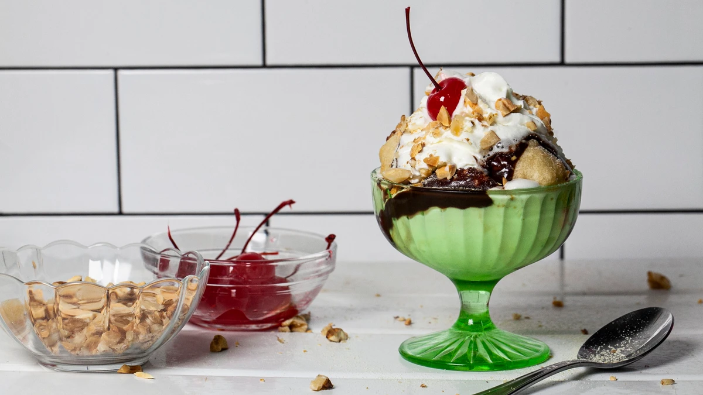

Fried Milk Sundae

Description
Thicken sweetened milk into a creamy custard, then batter and fry it in this whimsical version of an ice cream sundae.
Ingredients
for the fried milk
- ¾ cup plus 3 tablespoons|115 grams malted milk powder
- ½ cup|75 grams cornstarch
- 3 cups|690 grams whole milk
- ½ cup|120 grams granulated sugar
for the Ovaltine hot fudge sauce
- 1 ¼ cups|300 grams heavy cream
- ¾ cup|130 grams light brown sugar
- ½ cup plus 2 tablespoons corn syrup
- ¾ cup plus 1 tablespoon Ovaltine powder
- ¼ cup|35 grams malted milk powder
- 5 ounces|140 grams unsweetened chocolate, roughly chopped
- 2 ½ tablespoons unsalted butter
- 10 grams vanilla extract
- 2 teaspoons kosher salt
Steps
- Make the fried milk: Blend the malt powder, cornstarch, and ¾ cup|165 grams cold water in a blender until smooth. Heat the milk and sugar in a small saucepan over medium until the sugar has dissolved. While whisking constantly, slowly add the cornstarch slurry to the milk and sugar and cook until thick and a thermometer inserted reads 160°F, about 5 minutes. Pass through a fine mesh strainer onto a quarter sheet tray lined with parchment paper. Refrigerate until set, at least 3 hours, preferably overnight.
- Make the fudge sauce: Heat the cream, brown sugar, corn syrup, Ovaltine powder, malted milk, and 5 tablespoons|65 grams water in a medium saucepan over medium until the sugar has dissolved and a thermometer inserted reads 220°F. Remove from the heat and stir in the chocolate until melted and smooth. Return to the heat and bring to a simmer, then stir in the butter, salt, and vanilla. Strain through a fine mesh sieve and cool completely.
- Make the batter and fry the milk: Heat 2-inches oil in a large saucepan until a deep-fry thermometer reads 350°F. Whisk 1 ½ cups|190 grams flour with the cornstarch, baking powder, and salt in a large bowl. Slowly add 1 ½ cups|350 grams cold water until smooth, then stir in the tablespoon of vegetable oil.
- Working in batches and using a metal bench scraper, cut the set milk into 1-inch squares (but you can make them larger or smaller depending on how you’re feeling!). Toss the cubes of milk in the remaining flour, then into the wet batter. Keep the tray of set milk refrigerated when you are not using it. Fry until the shell is set, about 1 minute. Transfer to a sheet tray with a rack set over it. Repeat with the remaining cubes of set milk. Cool completely, then repeat frying until golden, 30 seconds to 1 minute more.
- To serve, scoop vanilla ice cream into a bowl and top with a few pieces of the fried milk. Drizzle with the hot fudge sauce and sprinkle with the malt powder and chopped nuts. Squirt some whipped cream on top and finish with a cherry.